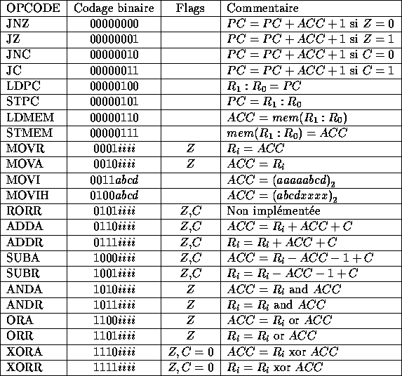

Etude et réalisation d'un microprocesseur général
Fabrice Bellard et Sylvain Delas
-
Microprocesseur général rapide pouvant adresser 64kB de mémoire.
-
Gestion des entrées-sorties : afficheurs 7 segments, clavier, et
éventuellement port série.
-
Minimisation du nombre de CLB.
-
Utilisation du microprocesseur pour simuler une calculatrice simple.
-
16 bits : avantage au niveau de l'adressage mémoire, mais risque de consommer
trop de CLB.
-
8 bits : simplification de la logique, mais nécessité d'utiliser une paire de
registres pour générer une adresse mémoire ou pour les sauts.
-
L'utilisation de beaucoup de registres diminue le nombre d'accès mémoire et
permet d'avoir des instructions courtes. Mais cela augmente le nombre de CLB
utilisés.
-
Une paire de registres 8 bits doit être utilisée pour le chargement du PC
et pour générer une adresse mémoire.
-
Sur quels registres l'ALU doit-elle travailler et quelles opérations sont
indispensables ? L'utilisation d'un accumulateur permet de diminuer le
nombre de chemins de données. Mais il faut aussi prévoir un mécanisme pour
sauver l'accumulateur dans les autres registres.
-
La mise à jour de flags par l'ALU peut servir pour faire des sauts
conditionnels ; les sauts relatifs sont intéressants car ils minimisent la
taille des programmes.
Un format homogène simplifie beaucoup le décodeur d'instruction. Des
instructions sur 1 octet simplifient le séquenceur, mais un problème se
pose pour le chargement de constantes de grande taille ( 8 ou 16 bits ).
D'un autre côté, si on inclut un champ d'adresse dans les instructions, la
taille moyenne des programmes sera plus faible.
Une gestion hardware (notamment des afficheurs) rend le débogage plus
facile, mais occupe beaucoup de CLB. Une gestion totalement software
complique sensiblement le logiciel, mais donne plus de souplesse.
-
Microprocesseur 8 bits adressant 64kB de mémoire avec au maximum 16
registres 8 bits plus un accumulateur 8 bits. En fait seulement 8 registres
ont été implémentés pour limiter le temps de compilation du circuit.
-
L'ALU peut faire les opérations suivantes: MOVR, MOVA, ADD, SUB, XOR, OR, AND. La
rotation à droite a été prévue dans le jeu d'instruction mais non
implémentée faute de temps (elle est simulée par des rotations à gauche).
Les calculs sont de la forme : ou . Le flag
Z (résultat nul) est mis à jour après chaque calcul, et le flag C (retenue)
l'est seulement après ADD,SUB,ROR. L'opération XOR remet le flag C à zéro.
-
On peut charger des constantes de 4 bits dans le quartet poids faible (avec
extension du signe au quartet poids fort) et dans le quartet poids fort de
ACC.
-
Les registres servent pour générer une adresse 16 bits utilisée
dans les sauts absolus et les accès mémoire. Le chargement du PC se fait
aussi dans . Quatre instructions spéciales permettent la lecture
et l'écriture mémoire (en utilisant ACC comme opérande), et la
sauvegarde et la restauration du PC.
-
Les sauts conditionnels relatifs utilisent ACC pour le déplacement. Ils
testent les flags Z et C.
-
Les périphériques ont d'abord été gérés de façon hardware pour
faciliter le débogage, puis de façon totalement software pour limiter
le nombre de CLB. Trois registres dédiés sont utilisés : pour la
sélection de l'afficheur et de la colonne du clavier actifs et la sortie
série, pour la commande des segments des afficheurs, et pour
lire la touche pressé sur la colonne du clavier sélectionnée.

Nous avons réalisé un macro-assembleur pour générer facilement les séquences
de code les plus courantes. Un simulateur complet (incluant la simulation du
hardware) a été réalisé sous XWindows et sur Macintosh.
Le microprocesseur fonctionne. Il utilise 190 CLB. Nous avons programmé une
calculatrice 4 opérations avec affichage en décimal et un jeu de labyrinthe.
Cela suffit à démontrer que notre microprocesseur est général.
La version testée atteint une vitesse de 0.3 MIPS, et peut être accélérée
jusqu'à 1 MIPS.
La gestion par logiciel des périphériques permet d'avoir une grande
souplesse d'utilisation.
-
Finalement, il aurait été aussi facile de faire des instructions sur un nombre
d'octets variable pour inclure des constantes de plus grande taille.
-
Le nombre de cycle par instruction pourrait lui aussi être variable (ajout
d'un reset sur le séquenceur).
-
L'utilisation de buffers 3 états au niveau des registres aurait simplifié
l'ensemble, mais nous aurions dû router certaines parties du circuit à la
main.
-
Il est possible d'utiliser encore moins de CLB si on autorise un code
automodifiant et des instructions opérant toutes sur un accumulateur et une
adresse mémoire.
Tue Oct 15 03:37:32 MET 1996
Fabrice Bellard (fabrice.bellard at free.fr)